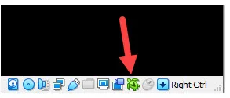

- General Troubleshooting
- Connectivity Troubleshooting
 [Broken-ExtLink--no-url-was-provided]
[Broken-ExtLink--no-url-was-provided]-
[Broken-ExtLink--no-url-was-provided]
-
[Broken-ExtLink--no-url-was-provided]
-
[Broken-ExtLink--no-url-was-provided]
-
[Broken-ExtLink--no-url-was-provided]
-
[Broken-ExtLink--no-url-was-provided]
- Download Issues

Fix VirtualBox green turtle icon issue on Windows hosts caused by Hyper-V and VBS. Learn how to improve VM performance and stability with step-by-step instructions.

Redirection to Kicksecure Documentation
- Introduction: <a href="../Introduction.html">Whonix Documentation Introduction, User Expectations, Footnotes and References, User Expectations - What Documentation Is and What It Is Not</a>
- <a href="../About.html#Based_on_Kicksecure">Whonix is based on Kicksecure™</a>: Whonix is built on top of Kicksecure. This means it uses many of the same security tools, design concepts, and configurations.
- <a href="https://www.kicksecure.com/wiki/Based_on_Debian">Kicksecure is based on Debian</a>: Kicksecure is developed using Debian as its base. Debian is a widely used, stable, and free Linux operating system.
- Inheritance: As a result, Whonix is also <a href="../Based_on_Debian.html">based on Debian</a>.
- Debian is GNU/Linux-based: Debian is built using the GNU/Linux operating system. GNU provides essential tools and Linux is the system's kernel (core).
- Shared documentation benefits: Since each system is based on the one below it, a lot of documentation and guides are shared. This reduces the need to duplicate information.
- Inherited documentation: Most instructions and explanations are inherited from Kicksecure or Debian, unless otherwise specified.
- Shared principles: The systems share similar security goals and setup instructions. In most cases, users can follow Kicksecure documentation when using Whonix.
- Keep using Whonix: This does not mean users should switch to Kicksecure. This page only points to related, helpful information.
- Where to apply the instructions: Follow the instructions inside Whonix unless specifically stated otherwise.
- Wiki editors notice: This information is pulled from a reusable wiki template: <a href="../Template:Upstream_wiki.html">upstream_wiki</a>. (<a href="../Special:WhatLinksHere/Template:Upstream_wiki.html">See which pages use this</a>.)
- Comparison: <a href="../Comparison_with_Kicksecure.html">Whonix versus Kicksecure</a>
- Documentation compatibility: Because Whonix is based on Kicksecure, you can often follow Kicksecure's instructions as long as you apply them in the right place.
- Summary: Whonix is built on top of Kicksecure, which itself is based on Debian. Debian is a GNU/Linux operating system. This layered design means Whonix inherits many features, tools, and documentation from both Kicksecure and Debian.
- Click here: Visit the related page in the Kicksecure wiki for full documentation and background:
 [Broken-ExtLink--no-url-was-provided]
[Broken-ExtLink--no-url-was-provided]
- Note: Re-interpretation...
Apply the instructions inside Whonix, not inside Kicksecure.
Kicksecure: Perform these steps inside Kicksecure.
Instead, apply the steps inside Whonix-Workstation.
Kicksecure for Qubes: Perform these steps inside Qubes
kicksecure-18Template.
Instead, use the whonix-workstation-18 Template for
these steps.
Categories: Documentation